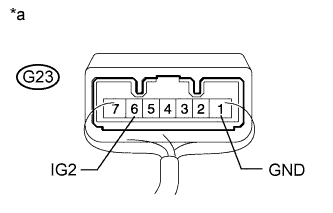

DTC B2788 IG2 Signal Malfunction |
| DTC Code | Detection Condition | Trouble Area | DTC Output Confirmation Operation |
| B2788 | Mismatch between the steering lock ECU IG2 input from the LIN communication system and from the direct line (1-trip detection logic*). |
| No confirmation operation is necessary (monitoring is continuous). |
| Vehicle Condition when Malfunction Detected | Fail-safe Function when Malfunction Detected |
| The steering cannot be locked or unlocked. For this reason, the engine cannot be started. | - |
| DTC | Data List Item | Active Test Item |
| B2788 | Entry&Start
| - |
| 1.CHECK STEERING LOCK ACTUATOR ASSEMBLY (STEERING LOCK ECU) |
Disconnect the G23 steering lock ECU connector.
Measure the resistance according to the value(s) in the table below.
| Tester Connection | Condition | Specified Condition |
| G23-1 (GND) - Body ground | Always | Below 1 Ω |
|  |
Reconnect the G23 steering lock ECU connector.
Measure the voltage according to the value(s) in the table below.
| Tester Connection | Switch Condition | Specified Condition |
| G23-6 (IG2) - G23-1 (GND) | Engine switch on (IG) | 10 to 14 V |
| Engine switch off | Below 1 V |
| *a | Component with harness connected (Steering Lock ECU) |
|
| ||||
| OK | ||
| ||